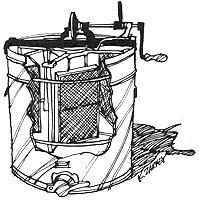
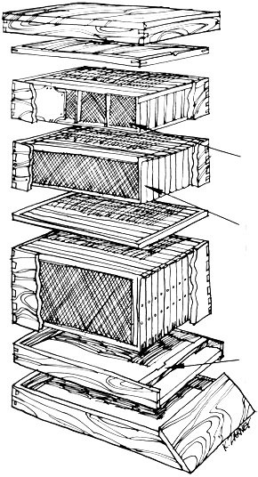

It will be quite obvious from this article that we are still beginners in beekeeping. All the better! Often the greatest help to the novice is the example of another amateur's success, rather than - or in addition to - the advice of experts.
What I hope to do here is not so much offer a manual for prospective beekeepers as to convince others that it's quite possible to keep these little creatures healthy, happy and productive enough to provide some measure of family income . . . even though you may not know what you're doing at first. Thank heavens, the bees do! - Virginia Owens
Deep in a New Mexico winter, with the moaning wind pushing the temperature even further below zero, we huddled around our wood stove and pondered ways to come up with the meager sum needed to continue our back-to-the-earth existence through the coming summer.
David, 8-year-old Amy and I had left a life of relative affluence behind us when we moved from the midwest to New Mexico, and it wasn't without a great deal of self-discipline and weeding out of old attitudes that we'd been able to reduce our exchange of actual cash for goods or services to about $100 a month. Still, as long as we continued to drive a car (in this case, a cantankerous '58 pickup) and until we were well enough along to grow-feed for our animals, money was a necessary evil.
But what could we do to get needed income without entangling a large part of ourselves in a world we were trying to get away from? The general exchange rate of time for money was just not in our favor even if we DID want to work away from home which, of course, we didn't. Besides, we weren't within easy commuting distance of any town offering employment anyway.
To make matters worse, the unemployment rate in New Mexico is such that if one wants a job he often has to make it . . . witness the number of craft shops in the state. My husband, David, and I-however-were trained in very unmarketable skills: we were both college English teachers. In time, perhaps, we could learn to weave, make pottery or do leathercraft. But time and tools were short.
We had been quite inspired by Scott and Helen Nearing (authors of LIVING THE GOOD LIFE) and the way they had cultivated a life style that required as little cash as possible. For what they did need, a small maple sugar operation was sufficient.
Maple trees are few and far between in New Mexico, however, but-aha!-people everywhere crave a little sweetening, and they'II pay those that supply it for them.
Why not bees? Why not the honey business?
Actually our reasoning processes were somewhat more slugish and somewhat less independent than I've indicated here. The suggestion that we go into bees came first from an older friend who had kept them as a boy in New Mexico and our advisor remembered enough about beekeeping to give us the confidence necessary to carry out our scheme. Otherwise I'm not sure we'd have had the courage to face all the unfamiliar equipment or the bees themselves.
Fate, providence and the good fairies must have a been in favor of our decision because not long after our friend's suggestion, I ran across a lady who was quitting the bee business and moving into town. Not only did she have smokers, veils,- gloves, an extractor twenty-three supers (the stacked cases where surplus honey is stored) and eleven hives of bees-in face everything a small-time apiarist would need-but was interested enough in seeing younger people their hand at homesteading to let us have the whole business for the bargain price of $150.00
All told, that kind lady sold and gave us six pickup truckloads of tools, equipment and reference ma the worth of which is impossible to assess since most of the things we received aren't even produced anymore. Particularly valuable to us were the old bee magazines and out-of-print government pamphlets filled with hard-to-get old time information.
The A.I. Root Company's book, STARTING RIGHT WITH BEES, advises the novice to begin with only one hive in case he should become discouraged and want to give up. Fortunately we read this book after we'd already bought our eleven hives . . . one hive is hardly enough to supply an average family with honey year-round, much less provide a surplus for marketing.
One cold night in March, we drove a big truck into Mrs. Schulze's orchard, loaded on our eleven hives, drove them the 35 miles home, unloaded, went to bed about 3 a.m. and prayed that they'd still be there when we woke up. Much to our amazement, they were.
A few of the bees buzzed around the entrances to the hives in a dazed sort of way-which worried us for a while-but they were only orienting themselves to their new environment, making flights of gradually increasing length until they knew the area by heart (actually by antenna, since bees' memories are located there). In a few days, they were moving around in what we assumed was a natural sort of way. Now the hard part was about to begin.
Spring cleaning has to be done in bee hives . . . for the sake of the beekeeper, not for the sake of the bees (although they do gain some needed ventilation in the process). Wary that their homes will be invaded by marauders anxious to steal the fruit of their labors, the bees attempt to seal up every crack and crevice with a substance colloquially called bee gum but professionally known as propolis. The bees-clever creatures-make this gum out of the resins of new buds and it's one of the most persistent messes found in nature.
Scraping the bee gum from the top and sides of the frames and the brood chamber is the most difficult job in beekeeping, but it's a necessary one since an apiarist must be able to remove the honey-filled frames and to examine the chamber to make sure that a brood is healthy and the queen bee producing well.
Depending on how many supers are involved, this cleaning job takes around an hour per hive. One had best arrange the rest of his work schedule around the chore since it's easiest done when the fewest bees are at home. The best time is between 10 a.m. and 3 p.m. (with adjustments for daylight savings time, which bees do not recognize). Also, save cloudy, damp or windy days for other tasks . . . bees are impossible then.
If this sounds like persnickety hassling on the bees' part, remember that, unlike other creatures around the farm, they require neither daily feeding and watering nor a substantial cash outlay for food.
While mentioning food, I would like to digress long enough to discourage feeding sugar syrup to bees, especially during the spring brood-raising season, since the syrup retards the development of certain necessary glands. If white sugar is no good for you, don't try to foist it off on your bees! Honey, however, is fine for bees, and any frames that "candy" before they can be extracted should be saved for winter feeding.
After the hives are all spruced up, each brood checked through the clean cracks and conditions recorded in a little notebook (it's handy to have the hives numbered for this purpose), the incipient apiarist theoretically sits back smugly, keeps an eye on the rainfall and admires all the blooms of spring. The beekeeper is waiting for what is beautifully termed the "honey flow" . . . although during this period, he may occasionally clean up an extra super so that it's ready to be exchanged for a full one at the appropriate time.
Actually, WE weren't so smug. The spring rains failed to materialize (driest season in 59 years, the old timers told us), making the blossoms small and scarce. And our nearest neighbor is a devotee of DDT!
The irrigated fields of alfalfa eventually began to bloom, however, even if the fruit trees were rather poor, and the cactus and other desert flowers shrugged at the drought and bloomed anyway. Luckily, too, the prevailing westerly winds didn't falter the day that our non-organic farmer to the east sprayed with DDT.
In June we extracted our first honey . . . dark, much tangier than regular clover honey and super sweet. An extra room in our small adobe pump house became the "honey house," and there the extractor-a big metal drum with wire cages for holding the honey frames-was bolted down to a wooden base. A battered electric skillet full of water was set up to heat the wide-bladed capping knife used to cut the wax caps from the comb.
I uncapped the frames while David cranked the extractor, a relatively easy job because of the gear ratio. We put a clean plastic bucket covered with copper screening under the spigot at the bottom of the drum and, after the first super was empty, we opened the spigot . . . and out gushed the glorious, golden rewards of our and the bees' labor.
We poured the honey from the bucket, with no further processing, into glass gallon jars (we had inherited hundreds from our bee lady), screwed the lids on and that was that. Nothing could be simpler. When honey is processed (or not processed) in this way, it's called raw honey . . . as opposed to pasteurized honey, which is heated to 160° to kill possible yeast spores (a process that also destroys any vitamin content and most of the enzymes that make honey so superior to refined sugar).
We got approximately two and a half gallons of honey per super and each gallon weighing about fourteen pounds. A hundred pounds from our first extraction! But now my underlying fears began to pop up: here we were with 100 pounds of honey . . . what if no one bought it?
Mrs. Schulze had supplied us with the names of her old customers, so we took five gallons with us on our next weekly trek to town and started down the list. Not only did we sell them all-at $4 a gallon-but almost every old customer suggested a new prospect and we added more names to our list!
By mid-July, we were extracting about 100 pounds of honey a week, with the main flow still to come. And already we had more demand than honey! Just one account, a friend of ours-again operating on the principle that in this part of the country one must create his own work-makes items for natural food stores in Santa Fe, Albuquerque and Taos. He uses large quantities of honey in his breads, granola and cookies and he and the local natural food store will buy all we can supply.
Also, in exchange for giving our friend a cut rate for quantity buying, he takes our cappings (the wax that is cut off the combs and which has a goodly amount of honey left in it) and markets them for us at the city stores he sells to.
Cappings, we've discovered, command an even higher price than honey because, (1) rendered beeswax is worth more per pound than honey on the open marker and (2) people can use cappings to relieve their suffering from allergies caused by local plants. Since bits of pollen are incorporated into the wax, chewing it like gum will create an immunity to said pollen.
At any rate, selling the cappings saves us the trouble of draining and boiling them and rendering the wax.
In rendering, the wax is boiled in water until it rises to the top, cools, hardens and is broken loose. The bottom of the pan is then scraped free of dead bee bodies and general grunge, and the process is repeated until the wax is relatively free from debris.
Candles made from this beeswax are lovely things, sweet smelling and capable of giving off a brighter light than ordinary paraffin wax candles. Hunters who make their own shot also use beeswax for bullet molds and artists find innumerable uses for it. Old wax can always be traded back to bee supply companies for new comb foundations, too.
Although we have not yet entirely solved the problem of providing ourselves with a year-round cash income, our eleven hives are good for three to four months of expenses. Since the bees require no more than one day a week of our time, we think that's a pretty good exchange. Eventually we'd like to work up to twenty-five hives, which is about the number we figure we can handle easily and which should carry us at least half the year.
Our own success with bees is due to a combination knowledge and luck . . . and there's no way I can hope to tell you as much about getting started in this business as you'll learn by reading publications which are already available.
The first book we happened to read was the Boy Scout manual on bees. It will get you started . . . but at every crucial point it advises you to consult your counselor.
Another handy manual is STARTING RIGHT WITH BEES, and after you've graduated from that, try THE ABC AND XYZ OF BEE CULTURE. Then if you really get involved, take on THE SOCIAL BEHAVIOR OF THE HONEY BEE (a Dover Press paperback). It's highly scientific and theoretical rather than pragmatic, but it'll sometimes help in distinguishing fact from fiction in all the old wives' tales you're likely to hear.
As any bee book will suggest, beekeeping is a good amateur vocation, especially today when it's one business that declines yearly. Recently the decline has been drastic, primarily because really large apiaries-ones with thousands of colonies-have been wiped out over night by poison sprays.
In New Mexico, where the beef cattle industry rages, many beekeepers (to say nothing of the bees) are sufferingfrorn a government-subsidized bulldozing of hun dreds of acres of salt cedar and mesquite . . . principal sources of nectar and pollen. Of course bees, along with other insects, are major pollinators, so it seems that this far-reaching folly would be evident to anyone. Someday when people are banging on the door, begging us to rent them our bees for crop pollination, they may see the error of their ways.
Right now we're grateful to the bees for both our honey money and for the way they've made us more aware of our own little eco-system. Thanks to them, we have a developing weather eye and know that wild asparagus (which we hadn't even SEEN before) flowers make great honey and bloom even earlier than yucca. And after the yucca comes cholla and silverweed and blue-eyed grass . . . and honey . . . and honey money . . . and us!
APIARIST -a beekeeper.
BEESWAX -the wax secreted by honeybees and used in building their combs. Bees may consume from 8 to 20 pounds of honey to secrete one pound of beeswax.
BROOD -young developing bees in the egg larval and pupa state, not yet emerged from their cells.
BROOD CHAMBER -the part of the hive in which the brood is reared and honey stored for the survival of the colony.
CAP -the waxy covering which closes cells containing the brood or honey (also called cappings).
COLONY -the community of bees having a queen, some thousands of workers and-during part of the year-a number of drones.
COMB -the mass of hexagonal cells of wax, built by the bees and used as a place to rear their young and store honey and pollen. The cells are built back to back with a common wall.
EXTRACTOR -a machine used to remove honey from the comb. It is usually a drum-like container, inside of which is a revolving reel which holds a set of capless combs. The honey is thrown out by centrifugal force, and the combs are not destroyed.
FRAME -four pieces of wood (the top bar has shoulders) joined at the ends to form a rectangular device for holding the honey comb.
HIVE -a man-made home for bees containing one or more boxes (supers) of frames.
HONEY HOUSE -a building used for storage, honey extraction and the like.
PROPOLIS -a kind of glue or resin collected by the bees and used mainly to close up cracks and anchor the hive parts together. Also called bee gum or bee glue.
QUEEN BEE -a fully developed female bee (there is usually only one to a hive) whose function is to lay eggs. The queen is surrounded by workers (sterile females who sustain and guard the community) and drones (male bees whose sole function is to fertilize young queens).
RENDERING -the process of separating wax from its impurities by melting combs and cappings in water.
SMOKER -a device which uses special fuels to produce smoke for the purpose of subduing bees when hives are opened, moved or otherwise worked.
SUPER -a receptacle, containing a number of frames, in which bees store surplus honey; so called because it's placed on top of the brood chamber.
METAL CLAD COVER telescopes over the supers underneath.
INNER COVER helps insulate bees from heat and cold, and adds to convenience in handling bees.
SECTION SUPER is used for comb honey. Surplus honey is stored in individual section boxes.
COMB SECTION BOX
SHALLOW SUPER with frames for storage of honey. There may be several such supers to a hive. Honey from these can be extracted from the combs or chunk honey may be cut out of the combs.
FRAME
EXCLUDER is placed over the deep super to keep the queen in the brood chamber.
DEEP SUPER with frames and beeswax comb foundation. This kind of super is used as a brood chamber when it is next to the bottom of the hive or for surplus honey if another deep super is placed below it.
BOTTOM BOARD is equipped with a bee entrance, the size of which can be changed as conditions warrant.
BEE ENTRANCE
HIVE STAND may be used to keep hive off the ground.
|
 |
 |
|